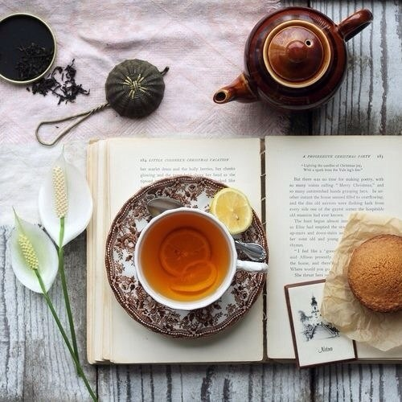

|
«Я лежал в полудрёме, а утреннее солнце карабкалось ввысь, Когда мои мечты были прерваны громовым ударом в мою дверь. Стражник принес письмо от императорского цензора, Императорские цензоры Поперек белого шелкового конверта — три больших косых линии. Открыв его, я прочитал слова, которые запали в мою душу. Он написал, что он посылает три сотни луноподобных упаковок чая, Великолепный чай! И собран так рано в этом году, когда насекомые едва начали вылупляться из личинок, Когда весенний ветер только начинает дуть, И весенние цветы еще не расцвели, А Император все еще ожидает Ежегодную пошлину чая «Ян-Сен!» Aх, как замечателен этот чай, его обдул ласковый ветерок и смыл росу с листьев. И эти крошечные листики сияют словно золото! Он был упакован свежим и благоухающим от сушки, Его превосходное качество было сохранено от потери. Этот чай был предназначен только для высокородных сановников, Как же он достиг моей скромной хижины на вершине горы? На славу чаю, я закрыл ворота моего дома, Чтобы простой народ не вторгся, И никто не попросил чашку этого чая, Чтобы заварить и попробовать его в одиночестве. Первая чаша слегка увлажнила горло и губы; Вторая вывела меня из одиночества; Третья удалила скуку из моего ума, Обостряя вдохновение, полученное из всех книг, которые я прочитал. Четвертая чаша вызвала легкую испарину, Рассеивая через поры все неприятности по службе. Пятая — прочистила каждую частичку моего естества. Шестая сделала меня подобным бессмертным. Седьмая, это предел того, что я смог выпить — Легкий ветерок исходит от моих подмышек. Где те острова, на которых живут Бессмертные, я тоже хочу им стать, Я — Мастер Желтого Источника поеду верхом на этом ветерке, В горы, возвышающиеся над землей, где живут бессмертные, Огражденные Владыкой от ветров и дождей. Смогу ли я избежать бесчисленных перерождений среди высоких горных пиков? Я хочу спросить цензора Mэна, если он сможет сообщить, Смогу ли я когда-нибудь отдохнуть от этих перерождений».  |
|
|
Главная | Чай | Статьи | Форум |